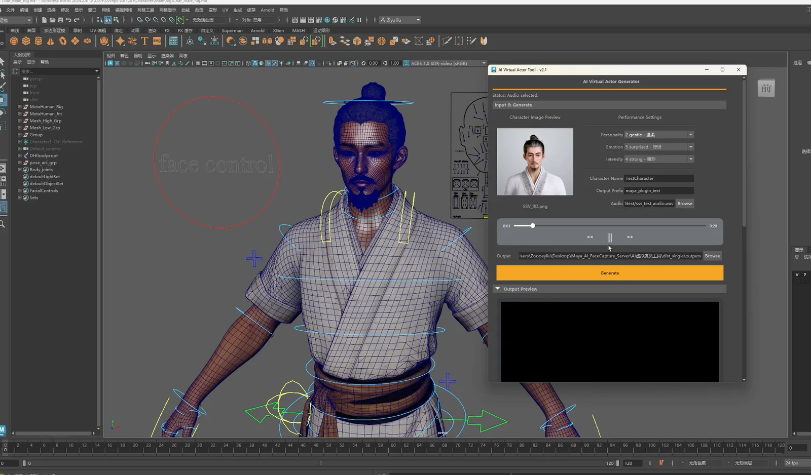

Personality = persistent acting tone
Controls micro-expression frequency, eye intensity, and the character's overall behavioral tendency.

An end-to-end workflow and Maya tool that turns a character image, voice, and structured performance direction into a generated performance — then solves it back into facial animation data for Maya and Unreal Engine.

编排模型、提示词与训练数据，从静态角色生成面部表演。

The plugin is packaged as a productized Maya shelf tool with bundled media utilities and automated environment checks.
Pose /
表情参考图用于约束角色姿态与表情，不直接作为最终生成输入。
输出视频进入产品端；JSON 动画数据可继续传回 Maya, UE 面捕链路已完成验证，Superman 接入中。
The control model separates long-term personality, current emotion, and performance intensity. Each selection maps to tested description fragments and AU guidance before entering the generation workflow.
Controls micro-expression frequency, eye intensity, and the character's overall behavioral tendency.
Shapes mouth corners, brows, eyelids, and muscle direction for the current line.
Adjusts expression weight, motion range, and exaggeration from micro to strong.
Base constraints, negative controls, AU logic, and a recorded seed reduce semantic conflicts and improve reproducibility.
Final generated performance showcasing the integration of the ComfyUI pipeline.
Core mechanics of the ComfyUI nodes, model processing, and custom prompt system integration.